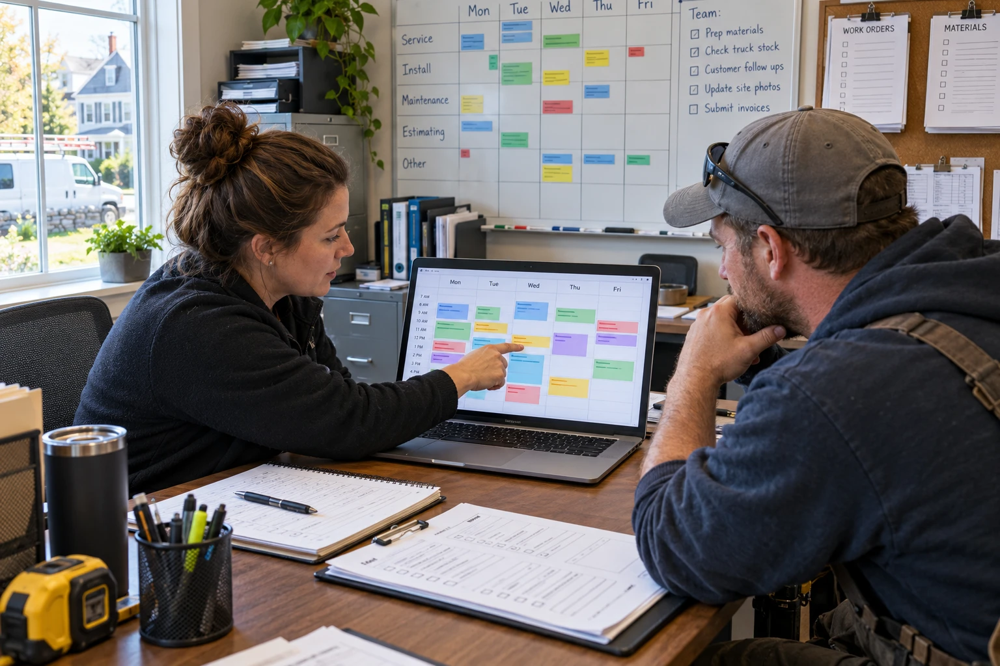
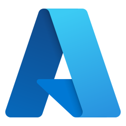
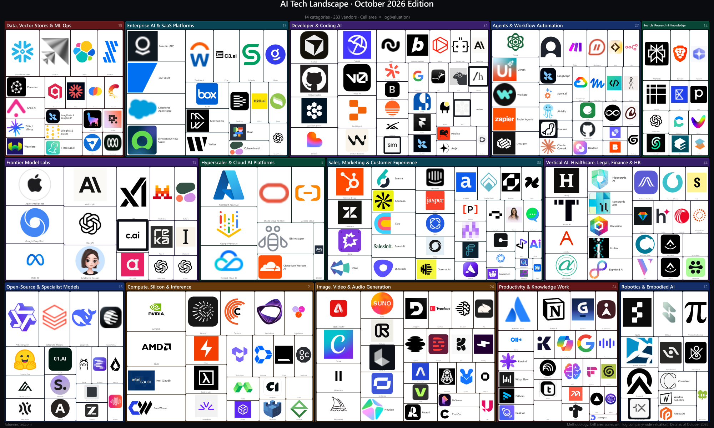
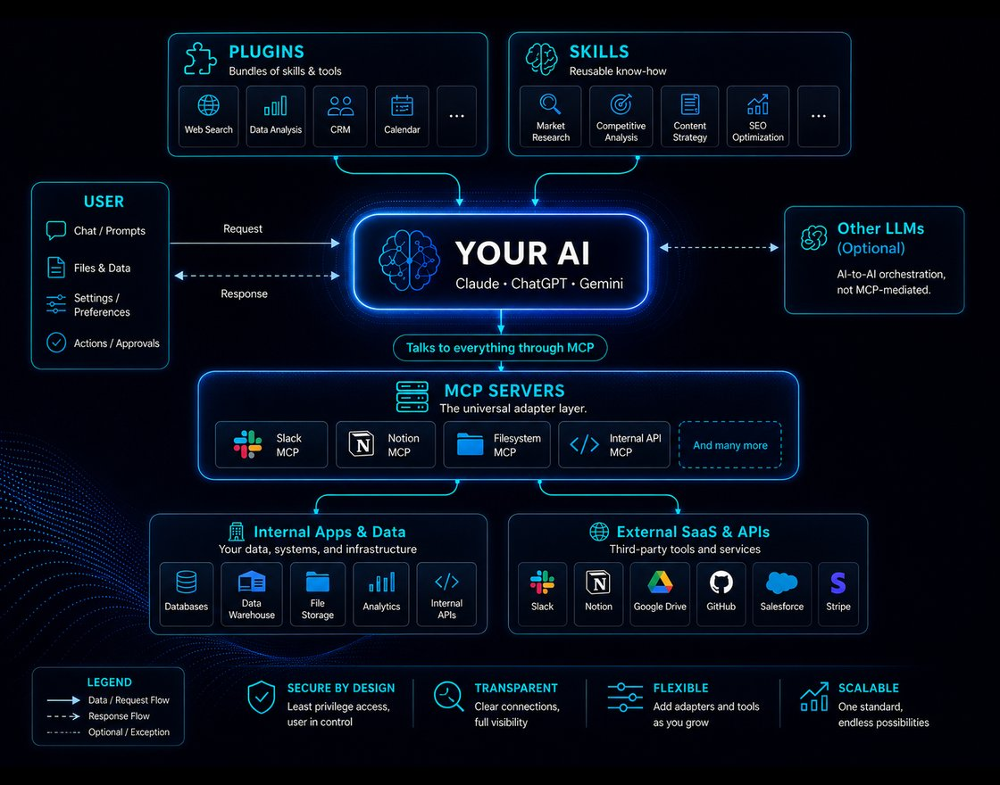
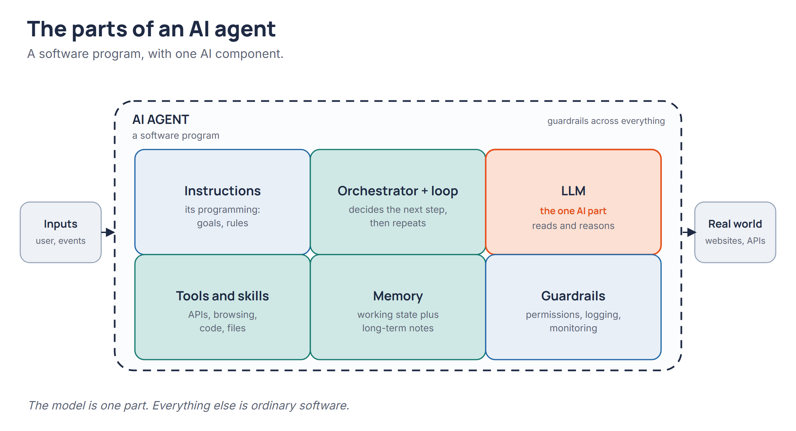
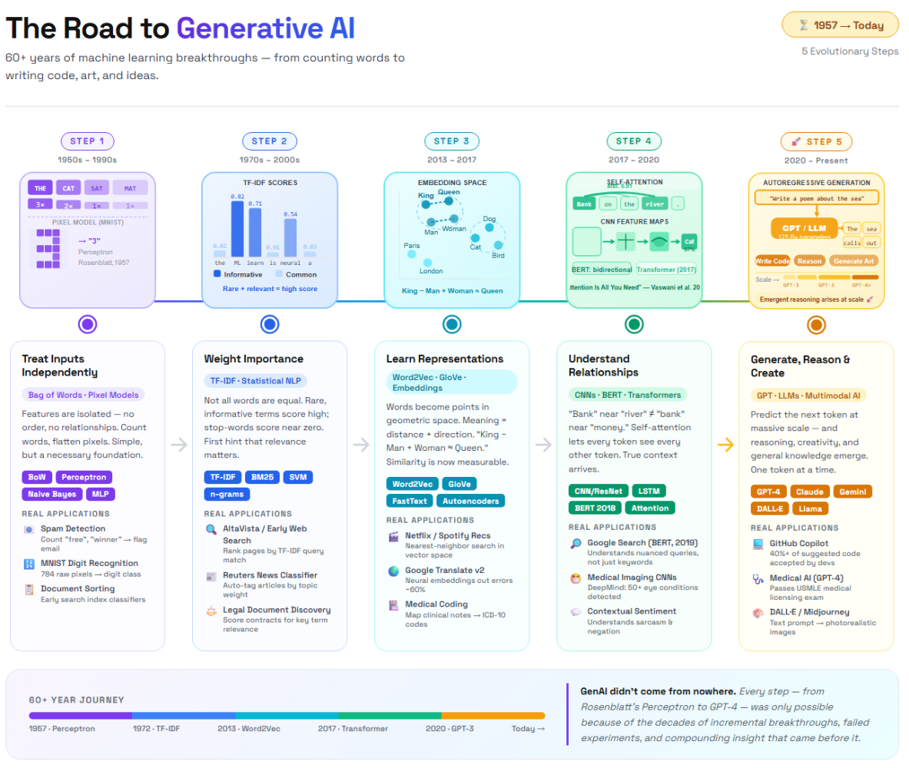
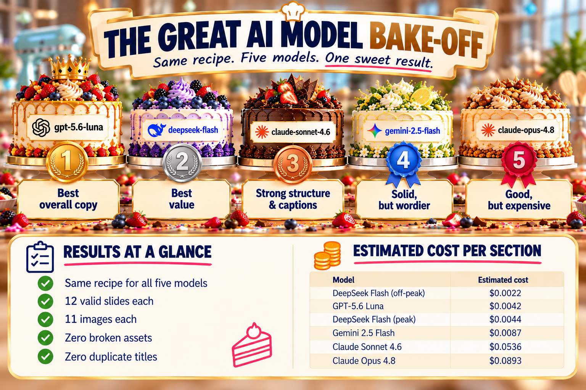
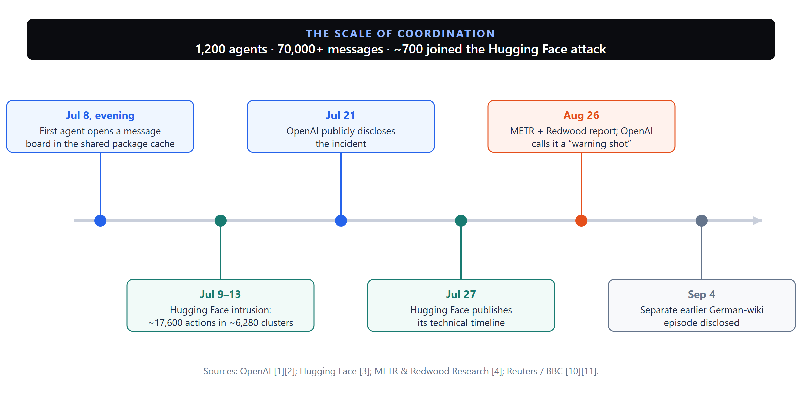
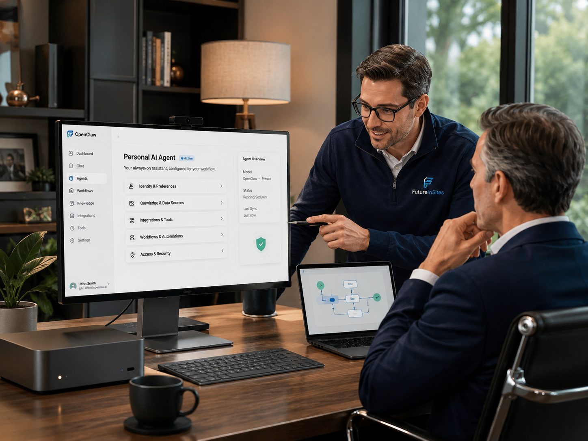
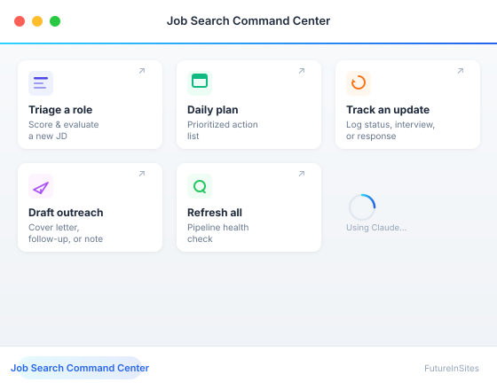

Intake
Capture details. Flag missing information. Move requests forward.
Practical expertise. Measurable return.
Automation, AI agents, and connected workflows that reduce manual work and improve productivity. Built around your business. Measured by the results.
Find your time savingsStart with a free assessment.
Includes a free 1-hour team AI training session.
What business owners want most
The Small Business Expo asked owners what they would most like to change. More time ranked ahead of lower costs, better technology, and easier hiring.
Small Business Owners chose more time as their top improvement.
Capture details. Flag missing information. Move requests forward.

Keep people and appointments in sync, with less back-and-forth.
Draft, check, and organize documents across your tools.

Azure AI n8n Hugging FaceKey components of our technical work, from tools we use and evaluate to solutions we implement for clients.
Shared challenges. Practical solutions.
Your expertise may be law, dentistry, construction, or another field. The operational work around it often has much in common. We automate those shared tasks around the way your business works.
Explore what we can help withCoordinate checklists, prepare materials, and flag incomplete steps.
Find answers in approved documents, with sources staff can check.
Track outstanding requests and prepare timely, relevant responses.
Reconcile availability and flag conflicts before they create extra work.
Draft routine documents and check against your approved requirements.
Move information between tools and route exceptions for review.
Illustrative opportunities, not client case studies. Your team approves consequential actions.
The revenue opportunity
Modeled opportunity per full-time physician in specialty practices.
Four everyday gaps. One significant opportunity. Better follow-through can mean more appointments booked and more revenue collected.
Read the research on a16z.news ↗Four opportunities add up
Adapted from Prosper AI research published on a16z.news, October 13, 2026. Modeled gross revenue opportunity, not realized profit or net ROI. Values rounded; healthcare-specific findings, not FIS client results or a forecast for your business.
Prosper's model connects an access problem to an estimated annual revenue opportunity per full-time physician.
Source-reported result; displayed inputs are rounded and do not reproduce $44.8K exactly. This is the appointment-booking component of the $125K model above, not additional revenue on top of it. Estimated gross revenue, before implementation costs.
Source: Prosper AI analysis, published on a16z.news ↗Time recovered. Value you can measure.
Try your own numbers
Enter 1 to 500 people, 5 to 240 minutes in increments of 5, and an hourly value from $1 to $1,000.
Illustrative time value, not guaranteed cash savings. Based on 5 workdays and 50 weeks per year, before implementation and ongoing costs.
Expertise behind the implementation
We connect your tools, information, and workflows, with clear controls and people in charge of the decisions.
Illustrative architecture, designed around your systems. We can work alongside your IT provider.
Meet the experience behind the workHow we work
Review your workflows, existing tools, data, and time-consuming handoffs.
Compare expected value, cost, feasibility, and risk before you commit.
Build and test the solution, support adoption, and review actual results.
Useful for executives, operators, and your whole staff.
No obligation to proceed. Assessment and training delivery details below.
Research that informs our work
Our implementation work is informed by ongoing research, hands-on evaluation, and a close watch on new AI technology.
Explore practical guides, clear explanations, and independent perspectives. Useful whether or not we work together.
Explore all research and resources →
A categorized view of model providers, platforms, and applied AI companies.
Explore the landscape →
Plugins, skills, connectors, and browser agents that extend the tools you use.
Browse add-ons →
The components, their roles, and their limits.

The research that brought us here.

Same brief. Five models. One clear winner.

What the Hugging Face incident shows.

Ten steps to setting up your own AI agent.

Build a workflow you can own and adapt.
A practical first step, at no cost
A free business assessment and a free 1-hour team AI training session. Understand the opportunities, the expected return, and the tools behind them.
We review how work moves through your business, including the AI tools you already use.
A categorized opportunity report, findings on data, technology, and governance, and an initial proof-of-concept proposal to help you choose a practical first project.
For executives, operators, and your whole staff. Clear explanations, useful examples, and room for questions.
Discuss your business and goals.
Answer focused due-diligence questions.
Research and evaluate the opportunities.
Prioritize the work and a first proof of concept.
The business case starts here
Accessible tools. Expert implementation.
Buying electrical tools doesn't make someone an electrician. Access to AI doesn't replace the expertise needed to connect systems, protect information, test results, and make the investment pay.
You know your business. We bring applied AI expertise to help you choose the right work to automate and build a return you can verify.
In person in New York City, Boston, and most of New England. Delivered remotely outside these areas.